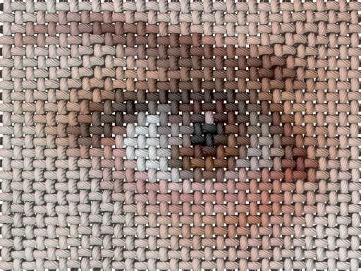
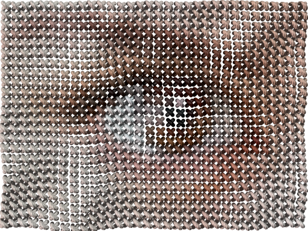
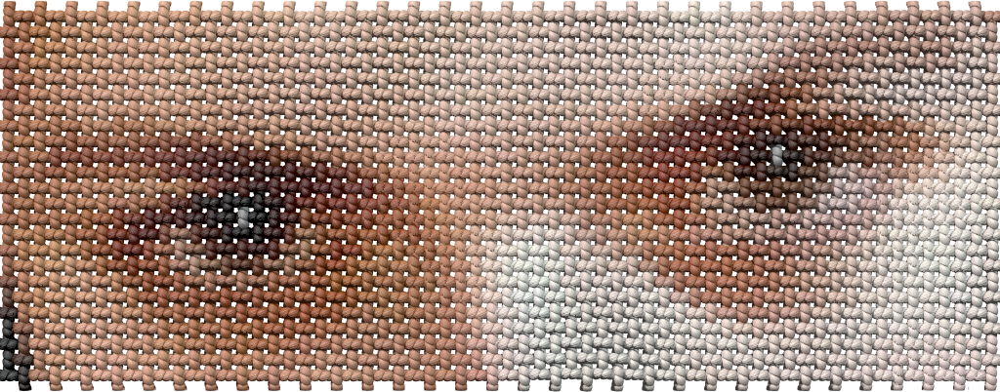

POV‑Ray Thread: Linen and Stitch
Converting 2D image into canvas and cross-stitch 3D simulation
POV‑Ray Thread, a bastardly offspring of POV‑Ray Mosaic project, is a program which read pixels of source image and convert them into a complex 3D structure, simulating something textile and thread related, in POV‑Ray format.
You can download «POV‑Ray Thread» from GitHub and use it for free. All non-standard modules included into distribution, so program is supposed to work right out of the box with any standard installation of Python 3.11 and above.
Currently «POV‑Ray Thread» contain two export functions: «Linen» and «Stitch».
Linen...

linen output rendering example
«Linen» is a program for simulating most common plain weave, seen in many cotton, wool, and practically all linen fabrics. Elemental nodes of linen output are colored after source image pixels, producing colored taffeta or print on canvas look.
Resulting POV‑Ray files are easy to edit, globally changing thread finish (dull/shiny) and texture (normal vectors) to simulate wide range of threads, from single strand plastic to multistrand natural fibers.
...and Stitch

stitch output rendering example
«Stitch» is a program for simulating most common cross-stitching embroidery type, i.e. a cross stitch. Each of 3D stitches produced by program is colored after source image pixel. Stitch pattern may be distorted during rendering, turning too regular artificial appearance into something more natural. Distortion is based on structured Perlin noise pattern, suitable to simulate textile deformation.
Currently both «POV‑Ray Thread» programs use one primitive to simulate main object, but this, as almost any other setting, may be overridden. The easiest way to do so is using external "preset.inc" patch files which, upon importing into main scene file, will override all previous settings. Currently «POV‑Ray Thread» distribution contain several isosurface-based presets, providing extremely fine details on large-scale renderings.

example of rendering using include file with isosurface main object
Accessory: Adaptive color averager
In cross stitching, single thread is often used to produce several stitches in a row, producing flat single color areas. To help with color reduction for this, a small color reduction utility «Averager» is included into the package.
Unlike regular color reduction utilities, like ones used to create GIF files, «Averager» does not build common palette for the whole image but rather tries to find, isolate, and flatten smooth areas based on local contrast, which is much closer to idea of using single thread for the area.
«Averager» is considered an accessory since it does not produce POV files - it loads PNG or PPM file, filters image, and saves filtered image as PNG or PPM.
Initially «Averager» was a small utility, and became redundant once main POV-Ray Thread program got image filter included; however it appeared to be very interesting illustration of image filter made in pure Python from scratch without using any third-party image editors, and therefore was maintained and became quite mature program.
To simplify visual filtering adjustments, «Averager» is equipped with minimal yet suitable Tkinter-based GUI.
Currently both programs are relinked with PyPNM version 2, which is of special interest for «Averager» since new module provides more resource saving way of working with large images.
Update: release 1.34.10.1 includes filter version 4. Unlike previous filters, this substantial update uses multithreading. While it does not give any benefits with old Python, with new free-threaded (no-GIL) versions (like python3.14t.exe) speed increases proportionally to physical CPU cores number. E.g., on my laptop filter with 2 physical cores speed is doubled.
Apparently 1.34.10.1/1.34.14.4 releases includes updated «Averager» equipped with new modular GUI, presumably more suitable when working with large images. Main «POV‑Ray Thread» GUI remains single window since it's not supposed to be used for large source images (since renderings are always much bigger than sources).
Previously on POV‑Ray Thread: version 1.33.25.13 provides yet another 7% filtering speed increase with filter ver. 3.33.23.23 (on the top of previous 20% provided by filter ver. 3.26.20.8). In release ver. 1.20.7.14, filter module was substantially rewritten (module version 3.20.7.14) to correctly support all color modes from L to RGBA. Wrap around processing of seamless patterns added to «Averager»; default behaviour for «Averager» is filtering alpha channel, for «POV‑Ray Thread» - keeping source alpha.
Humbly report, sir, it's got to be shaken out of me like out of a hairy rug in order to get a proper view of all the events, if I'm permitted to quote the favourite words of the late lamented cobbler Petrlik, when he ordered his apprentice to take down his trousers before he started flogging him with a strap.
Since ver. 1.16.20.20 both POVRayThread.py and Averager.py try to mimic shortcuts and keyboard modifiers of Photoshop.
UI click reactions in general are similar to Photoshop (click to expand):
- After starting program double click on preview area (or Ctrl+O) is equal to "Open...", right click (or Alt+F) brings general "File..." menu;
- After opening an image Ctrl+click is "Zoom in", Alt+click is "Zoom out", similar to Photoshop;
- Unlike Photoshop, mouse wheel also works for zooming in and out, but never for scrolling;
- What as to scrolling, click and drag pans the image, if the latter doesn't fit the preview window.
- Keyboard shortcuts represent a hybrid: Ctrl++ and Ctrl+- work for zooming like ones in Adobe Photoshop, while Ctrl+1 copies Macromedia Fireworks for "Zoom 1:1".
- Enter runs filter, after that filter result is shown;
- After filtering, left click and hold switches before/after images. Be patient though, since double click still works as "Open...". Space also switches before/after images.
- Obviously, Ctrl+S and Ctrl+Shift+S work as "Save" and "Save as...", correspondingly.
Since ver. 1.16.6.18 POV‑Ray Thread, beside easy to use GUI, got adaptive averaging filter linked, so now it is capable to perform image filtering on its own; therefore additional «Averager» utility became obsolete. However, updated version of «Averager» remains included into this package as a good example, illustrating a possibility of writing fully functional image filtering application using pure Python - filtering module itself is written in Python; image files reading and writing is based on PyPNG and PyPNM, both of them being pure Python modules; filter preview is based on PyPNM and Tkinter, and, surprisingly, all this works at a good speed!
Now it's time to download «POV‑Ray Thread» from GitHub and start building your own textile 3D scenes...
...or Move back to Dnyarri`s Python freeware main page.